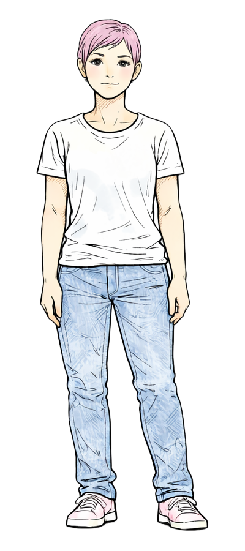
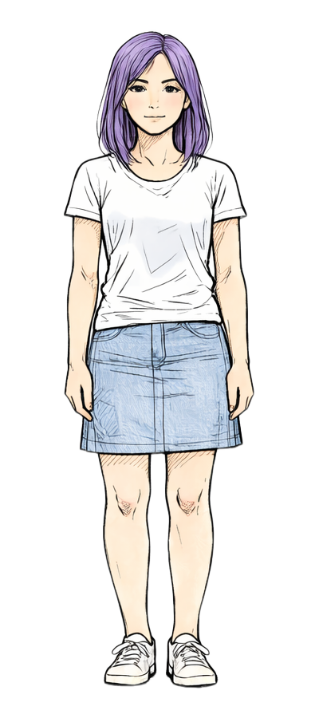

Living Room
Undersøg stuen
Find spor, tal med gruppen, og saml nok information til at gå videre. Du kan gå til haven, når du har fundet jordsporet eller opbygget nok fokus.




Garden
Følg sporet videre
Jessica ved måske mere, og tingene i haven fortæller også deres egen historie. Du kan først gå til parken, når du både har talt med Jessica og fundet headphones.


Park
Tal med Jack
Jack ved, hvad der er sket, men gruppens reaktion afhænger af dine valg. Find notesbogen først, og vælg så hvordan du vil svare ham.


Street Night
Før midnat
Gruppen går hjem gennem den mørke gade. Nu viser dine tidligere valg, om de stadig fungerer som et team, eller om aftenen har skabt for meget afstand.
Ending A
Sammen før solopgang
Notesbogen er ikke perfekt længere, men gruppen får samlet nok sider, nok idéer og nok tillid til at redde projektet før deadline.
Hvad der skete
- Du holdt gruppen samlet, og tilliden bar jer gennem den værste del af krisen.
- Du undersøgte sporene grundigt nok til at finde sandheden før midnat.
- Jacks efterladte telefonbesked blev et vigtigt spor i efterforskningen.
- I reddede projektet, ikke fordi alt gik rigtigt, men fordi I valgte at arbejde sammen.
Ending B
Noterne var ikke det eneste, der forsvandt
Gruppen finder nok af notesbogen til at forstå, hvad der skete, men ikke nok ro og tillid til at samle sig helt igen.
Hvad der skete
- Mistillid og pres gjorde det sværere for gruppen at stå sammen.
- I sprang over spor eller handlede for hurtigt, og det kostede overblik.
- Beskyldningerne satte sig fast, selv efter at sandheden kom frem.
- Projektet overlever måske. Gruppen gør ikke helt på samme måde.
Debug
Live state
Current scene: none
{}
Narrator
The example story is loading.